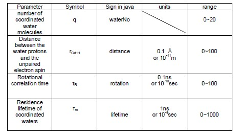

The platform below can be used online, please allow the java plug-in and enjoy it! (if it fails, please click here to enjoy the flash introduction at the end of this page.)
Statement
This platform is mostly made by Weiliang Xing of Balaji Sitharaman’s lab. The platform, which is based on modified SBM theory of relaxivity of contrast agent and experimental data from the lab’s experiments, shows the scientific relationship between several parameters that affect the contrast agent’s relaxivity strictly. We use java to program and publish it online so if you do not install java plug-in, please allow the installation. The interface is available for everyone. The copyright of platform belongs to Weiliang Xing and Balaji Sitharaman’s lab.

The platform’s aim
The aim of the platform is:
- For starters who have not touched contrast agent and its theory before, the platform could show complex but interesting relation of different factors involving in the relaxivity and basically indicate the general effects of different parameters governing the tendency in different conditions;
- For researchers who do the experimental work or theoretical study, the platform could simulate the modified SBM theory about relaxivity before the experiments in order to provide the prediction of experimental results or the basis of new design to modify certain parameters of the contrast agents (in most cases, we aim to find the best effect of certain new contrast agents); after the experiments, the platform could be fitted by evaluating statistical golden standard in order to ensure the design/ hypothesis, test the consistency of the theory in the new contrast agents or conditions, find potential errors of experiments and try to find new to modify the existing theory to meet the results;
- The introductory content of this platform in this tab of our website is just a background instruction and operation assistance, so please be not afraid of how deep the math will be required to understand, just have fun! We hope you will experience the difference and become interested in it!
Brief introduction of SBM theory
The Solomon-Bloembergen-Morgen (SBM) theory describes paramagnetically enhanced proton spin relaxation rates in the aqueous solution of transition metal ions (such as the contrast agents)[1][2][3]. Generally speaking, the SBM theory describes several parameters and their relationships by some equations to explain the behavior and nature of contrast agents. You do not need to know the details of the complex equations if you just start and the details will not be shown here.
Introduction of the parameters
In the platform, there are six parameters that affect the shape and tendency of the figure, four of which can be experimental modified and explained by Adobe flash. The flash is mostly made by Weiliang Xing and kelechi nwachukwu of Balaji Sitharaman’s lab. When asked by your explorer, please allow the installation of flash player plug-in. The copyright of platform belongs to Weiliang Xing and Balaji Sitharaman’s lab.
Note: the flash is just a brief introduction of each parameter. Here the contrast agent is Gadolinium (Gd) , a common metal used in contrast agents. Normally it is connected to some ligand and mostly it can interact up to eight water molecules. Here, for description, only six water are showed and no ligand here.
In the platform, these four parameters are shown as:
The effect of the change of the parameters will be shown in the theoretical curves in the “ NMR relaxation plot” tab and the simulation of MRI figure in the “image presentation” tab. For the theoretical curve, there are two curves: r1 and r2, which represent longitudinal and transverse relaxation rates, respectively. All the parameters will affect the longitudinal and transverse relaxation rates to different levels. For more details, please read original paper [1-3].
This is just the simulation, in other words, they are not done by the original experiments but theoretical prediction. In the image presentation tab, there are three pictures from one paper of our professor in MRI study [4]. They are Coronal magnetic resonance images of rats that received a PLGA/gadonanotubes scaffold. Images show the rats from the start (A), 3 weeks (B) and 6 weeks of the experiment (C). The head, tail, right side, and left side of the rats are marked by *, #, R, and L, respectively. The parameter sliders could control the intensity change of contrast agent area with different extent.
In conclusion, the change of the parameters showed above will change the enhancement effect of contrast agent positively or negatively to different degrees. By proper modification of the new contrast agent our lab engage in to improve the parameters shown above, we can obtain better performance of new contrast agents in NMR or MRI.
Comparison with our lab work currently
One main goal in our lab is to find a new, better MRI contrast agents based on or combined with carbon nanotechnology. One sub-goal of that is to design the optimal combination of parameters shown above to study the potential change of contrast enhancement in MRI, and verify or modify the existing contrast agent theories in order to gain further understanding of the mechanism of contrast agents and produce industrial-available next generation contrast agents. Take one of our projects for example, we investigate the relaxation characteristics of graphite oxide, grapheme nanoplatelets and nanoribbons. The figure S8 below is quoted from our work.
Figure S8. Curves obtained for fixed Q=6 with remaining SBM parameters allowed to float. A) Oxidized Graphite, B) Oxidized Graphene Nanoplatelets, C) Reduced Graphene Nanoplatelets, D) Graphene Nanoribbons.
The above figures are experimental work. However, it seems not optimal. In the platform, please press the “Real data” box button, and there appear four experimental groups like experiments:
Ox.GP(R1): Oxidized Graphite for R1 relaxivity;
Ox.NP(R1): Oxidized Graphene Nanoplatelets for R1 relaxivity;
Re.NP(R1): Reduced Graphene Nanoplatelets for R1 relaxivity;
NR(R1): Graphene Nanoribbons for R1 relaxivity;
In the figure of the platform, blue line represents fitting line for R1 relaxivity, and red dots represent experimental data.
The evaluation of fitting is done by four parameters: R-square, stand error, Chi-square and RMSD, which all have statistical meaning each. Here the details for each evaluation are not included, but below may be kept in mind:
- for R-square, the quality of fitting will be better if the value approaches integer 1;
- for other three forms, the less the value is, the better the quality will be;
- the standard error is for experimental data, not fitting lines;
- in one point, the evaluation is done within the showed scales; it means that different frequency range will have different number of data, which will influence the results.
Some points are obvious：first, in certain condition, the fitting is good, in another condition, it is not good, which needs more improvements; second, the theory is not fully perfect when you compare them in the Ox.NP group where the second peak in the figure could not be totally fitted, which suggests that there are some points need modification in the existing theory. Here is what is truly attractive: from the experiments and the platform, we find the theory which exists for several decades is not always perfectly true! And you can join with us to explore it!
Other functions in the platform
There are still other interesting and friendly functions in this platform. You can:
- plot the curve after setting parameters by pressing “Plot Response”;
- return the original status by pressing “Reset”;
- only show R1 curve in the figure by pressing “Hide Relaxivity 2” or show both by pressing again;
- directly write down the exact value of certain parameter or press the corresponding radio button to show the tendency by slider control;
- let the platform help you by pressing “show help” or hide it by pressing it again;
- show what happened in log-log domain by pressing “change to log-log plot” or return by pressing it again;
- control the details of x-axis including the value, the units (MHz, Mrad/sec, or Tesla) by pressing the “MHz” list button;
- control the range of x-axis by automatically set (2,3,4 decades) or manually control (Equidistance) by pressing “4 Decades” list button; Or just show the tendency of the curve in larger scale by pressing “freqs slider” and controlling the left slider;
- control the auto-set of y-axis range by pressing “Auto-R-range” button or manual set by cancelling it;
- track the R1 curve or R2 curve by pressing “R1 tracking” button or cancelling it and controlling the position of the tracking point by the slider blow, which is same for real data show by pressing “Real data”;
- Change the R1/R2/background color according to your preference by pressing the “Change to R2 color slider” and controlling the right slider;
Finally, let us begin to love this area and have fun with this platform!
Flash show about the platform:
If the java failes in your computer, please enjoy the flash show below about the basic operation of this platform.
Contacts and Acknowledge:
Contacts: If you have any questions or better ideas, feel free to email me!
Weiliang Xing: xingwl0401@gmail.com
Biomedical Engineering Department in the State University of New York in Stony brook.
Acknowledge:
Here thanks to Professor Balaji Sitharaman’s kind advice and my good friend Kelechi’s great help and most importantly I give my most appreciation to my girlfriend and outstanding designer Juan Wang who always accompanies with me when I met millions of troubles and share hard but happy period for the programming development.
References:
- N. Bloembergen, J . Chem. Phys. 27 (1957) 572.
- Solomon and N. Bloembergen, J. Chem. Phys. 25 (1956) 261.
- S.H. Koenig, J. Magn. Reson. 31 (1978) .
- Balaji Sitharaman,etc.Tis. Eng.17(1)19-26(2011).